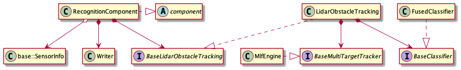

How to add a new lidar tracker algorithm¶
The processing flow of lidar perception module is shown below: ：

The tracker algorithm introduced by this document is located at Recognition Component listed below. Current architecture of Recognition Component is shown： 
As we can see from above structure, lidar tracker algorithm, such as MlfEngine, is the derived class of base_multi_target_tracker which acts as a abstract class member of base_lidar_obstacle_tracking located in Recognition Component. Next, We will introduce how to add a new lidar tracker algorithm.
The default tracking algorithm of Apollo is MlfEngine，which cloud be easily changed or replaced by other algorithms. This document will introduce how to add a new lidar tracker algorithm, the basic task sequence is listed below：
Define a class that inherits
base_multi_target_trackerImplement the class
NewLidarTrackerAdd config and param proto file for
NewLidarTrackerUpdate lidar_obstacle_tracking.conf
The steps are elaborated below for better understanding:
Define a class that inherits base_multi_target_tracker¶
All the lidar tracker algorithms shall inherit base_multi_target_tracker，which defines a set of interfaces. Here is an example of the tracker implementation:
namespace apollo {
namespace perception {
namespace lidar {
class NewLidarTracker : public BaseMultiTargetTracker {
public:
NewLidarTracker();
virtual ~NewLidarTracker() = default;
bool Init(const MultiTargetTrackerInitOptions& options =
MultiTargetTrackerInitOptions()) override;
bool Track(const MultiTargetTrackerOptions& options, LidarFrame* frame) override;
std::string Name() const override;
}; // class NewLidarTracker
} // namespace lidar
} // namespace perception
} // namespace apollo
The function signature of base_multi_target_tracker is pre-defined：
struct MultiTargetTrackerInitOptions {};
struct MultiTargetTrackerOptions {};
struct LidarFrame {
// point cloud
std::shared_ptr<base::AttributePointCloud<base::PointF>> cloud;
// world point cloud
std::shared_ptr<base::AttributePointCloud<base::PointD>> world_cloud;
// timestamp
double timestamp = 0.0;
// lidar to world pose
Eigen::Affine3d lidar2world_pose = Eigen::Affine3d::Identity();
// lidar to world pose
Eigen::Affine3d novatel2world_pose = Eigen::Affine3d::Identity();
// hdmap struct
std::shared_ptr<base::HdmapStruct> hdmap_struct = nullptr;
// segmented objects
std::vector<std::shared_ptr<base::Object>> segmented_objects;
// tracked objects
std::vector<std::shared_ptr<base::Object>> tracked_objects;
// point cloud roi indices
base::PointIndices roi_indices;
// point cloud non ground indices
base::PointIndices non_ground_indices;
// secondary segmentor indices
base::PointIndices secondary_indices;
// sensor info
base::SensorInfo sensor_info;
// reserve string
std::string reserve;
void Reset();
void FilterPointCloud(base::PointCloud<base::PointF> *filtered_cloud,
const std::vector<uint32_t> &indices);
};
Implement the class NewLidarTracker¶
To ensure the new tracker could function properly, NewLidarTracker should at least override the interface Init(), Track(), Name() defined in base_multi_target_tracker. Init() is resposible for config loading, class member initialization, etc. And Track() will implement the basic logic of algorithm. A concrete NewLidarTracker.cc example is shown：
namespace apollo {
namespace perception {
namespace lidar {
bool NewLidarTracker::Init(const MultiTargetTrackerInitOptions& options) {
/*
Initialization of your tracker
*/
}
bool NewLidarTracker::Track(const MultiTargetTrackerOptions& options, LidarFrame* frame) {
/*
Implementation of your tracker
*/
}
std::string NewLidarTracker::Name() const {
/*
Return your tracker's name
*/
}
PERCEPTION_REGISTER_MULTITARGET_TRACKER(NewLidarTracker); //register the new tracker
} // namespace lidar
} // namespace perception
} // namespace apollo
Add config and param proto file for NewLidarTracker¶
Follow the following steps to add config and param proto file for the new tracker:
Define a
protofor the new tracker configurations according to the requirements of your algorithm. As a reference， you can found and follow theprotodefinition ofmulti_lidar_fusionatmodules/perception/lidar/lib/tracker/multi_lidar_fusion/proto/multi_lidar_fustion_config.protoOnce finishing your
proto, for examplenewlidartracker_config.proto, add the following content:syntax = "proto2"; package apollo.perception.lidar; message NewLidarTrackerConfig { double parameter1 = 1; int32 parameter2 = 2; }
Refer to
modules/perception/production/conf/perception/lidar/config_manager.configand add your tracker path:model_config_path: "./conf/perception/lidar/modules/newlidartracker_config.config"
Refer to the
newlidartracker.configin the same folder and createmodules/multi_lidar_fusion.config:model_configs { name: "NewLidarTracker" version: "1.0.0" string_params { name: "root_path" value: "./data/perception/lidar/models/newlidartracker" } }
Refer to
multi_lidar_trackerand createnewlidartrackerfolder atmodules/perception/production/data/perception/lidar/models/. Add.conffiles for different sensors：Note：The "*.conf" file should have the same structure with the "proto" file defined in step 1，2.
Update lidar_obstacle_tracking.conf¶
To use your new lidar tracker algorithm in Apollo，you need to modify the value of multi_target_tracker to your tracker’s name in lidar_obstacle_tracking.conf located in corresponding sensor folder in modules/perception/production/data/perception/lidar/models/lidar_obstacle_pipline
Once you finished the above modifications, you new tracker should take effect in Apollo.